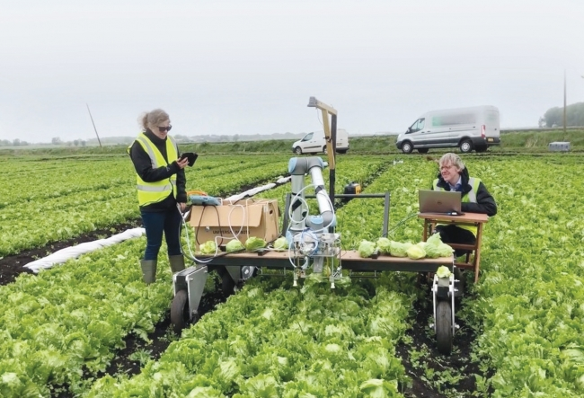

청년 농부의 재배 계획
어떤 작물을 심을지,
계획부터 세워 보세요.
작물 이름과 예측 기간, 생산비 조건을 정하고 재배 계획으로 보관하세요.
재배 계획 만들기현재는 조건 설정과 계획 관리를 체험하는 프로토타입입니다. 실제 수익 계산이나 작물 추천은 수행하지 않습니다.

서비스 알아보기
작물 선택을 위한 조건 정리
작물별 예상 수익을 비교하는 서비스를 목표로 합니다. 현재 화면에서는 작물과 예측 조건을 설정하고 확인할 수 있습니다.
재배 계획 관리
설정한 조건을 저장하고 다시 확인할 수 있습니다. 계획 취소와 되돌리기, 삭제도 가능합니다.
작물 소식 신청
작물별 가격 동향과 수익 예측 소식 신청을 체험할 수 있습니다. 실제 이메일은 발송되지 않습니다.
이용 방법
1. 재배 정보 입력
작물 이름을 입력하고, 필요하면 재배 지역도 적습니다.
2. 예측 조건 선택
3·6·12개월 중 기간을 고르고 생산비 반영 여부를 선택합니다.
3. 계획 저장과 관리
내용을 확인해 저장한 뒤 다시 열거나 취소·삭제할 수 있습니다.
정보 활용 동의
입력한 작물과 조건을 재배 계획으로 보관합니다. 저장한 계획은 현재 브라우저에서만 확인할 수 있습니다.
동의 후 재배 계획을 설정할 수 있습니다.
작물 수익 예측 조건 설정
이전 단계로 돌아가도 입력한 내용은 유지됩니다.
- 1 재배 정보
- 2 예측 조건
- 3 내용 확인
저장한 재배 계획 0
숫자는 취소하지 않은 계획 수입니다. 계획은 현재 브라우저에 보관되며, 브라우저 데이터를 지우면 삭제됩니다.
작물 수익 예측 소식 받기
작물별 가격 동향과 수익 예측 소식 신청을 체험합니다. 실제 이메일은 발송되지 않습니다.
이메일을 입력한 뒤 신청해 주세요.